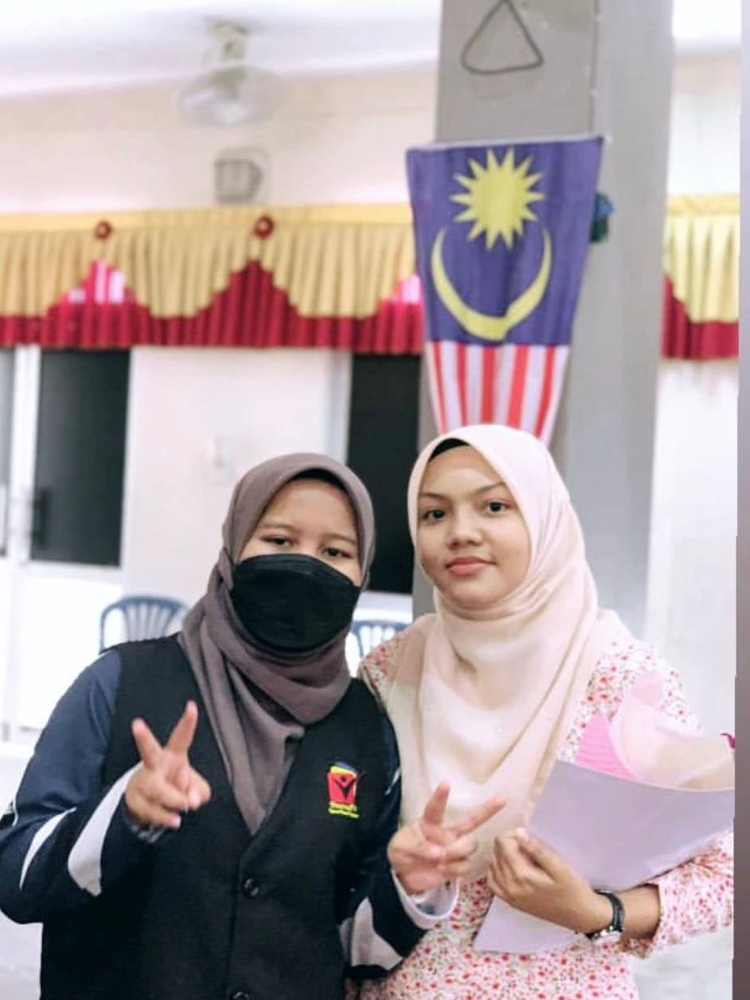
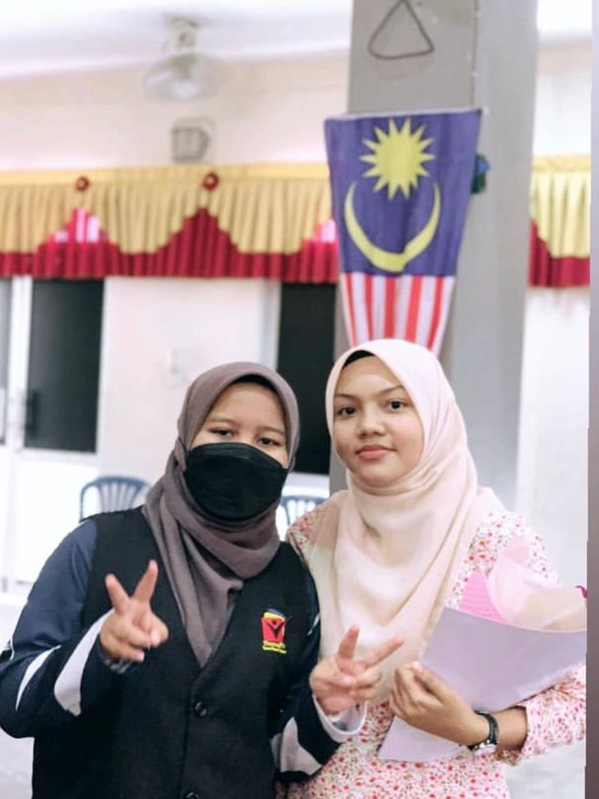

Allow me to share this experience.
On March 14, 2022, at 12:30 p.m., I completed my SPM exam by taking the final paper, Science 2.
This is the end of my SPM adventure. However, this voyage does not come without its hurdles.
When the COVID-19 epidemic struck, the school system experienced significant transformation.
Schools closed, and face-to-face schooling transitioned to online learning. Initially, I struggled to
adapt to this strategy. Learning online necessitates strong self-discipline and time management skills.
I frequently encounter technological issues, such as a poor internet connection and distractions at home,
which can break my focus.
Even so, I didn't give up. I'm attempting to adjust to this new environment. I make a comfortable study place
at home and ensure that I have all of the essential resources, such as reference books and a reliable internet connection.
I have created a rigid plan to ensure that I do not fall behind in my academics. I pay close attention in all of my online
lessons and aggressively ask questions if I don't understand. I practice continual learning by devoting extra time to things
that I find difficult. I also allocated aside time to study textbooks, revise, and answer previous exam questions.
In addition, I also take additional classes online. The teachers help a lot in terms of providing support by providing various
additional learning materials and review sessions. The same goes for my parents who are unwavering in their support.
They make sure I have all the learning needs, give moral encouragement, and help manage the home environment to be conducive to learning.
I shall never forget their assistance ❤.
 

The long-awaited day.
Day after day passed, and now it's time for the thrilling day which is on Thursday 8 June,
the results of the Malaysia Certificate of Education 2022 will be announced. Finally, my efforts paid off with excellent results in SPM.
My journey to achieve success in SPM was not an easy one. It requires seriousness, perseverance, and high commitment.
Since the beginning of the year, I have set myself the goal of achieving excellent results in this important test.
I would like to proudly share that I have achieved my SPM results with flying colors. Although my results were not as good as they were,
I am still proud of my hard work in planning my study schedule, attending online classes, and using effective learning techniques such as
mind maps and short notes, which have yielded positive results. This experience taught me that with discipline, determination, and support,
I can overcome challenges and achieve success even in difficult circumstances. SPM becomes an important stepping stone, opening the door to future opportunities.
UPU's Decision
The UPU results were announced on 22 July 2022, and I was accepted to UiTM Kedah, where I will major in Library Informatics Diploma, my last choice. Even though I didn't get the major I wanted,
I'm grateful. Alhamdulillah, I appreciate Allah for allowing me to advance my studies. I still have a long way to go before reaching a higher level.
Challenges and joys in pursuing the Diploma
Pursuing a diploma is a journey full of challenges and joys. Every obstacle encountered along the way, such as challenging assignments and thrilling exams,
taught me to be more resilient and persistent. Despite the difficulties, many sweet memories bring joy, such as receiving valuable guidance from dedicated lecturers,
friendships made with comrades in arms, and participating in extracurricular activities that are enjoyable and enriching experiences. This experience not only enriched my knowledge
but also shaped my personality to become more mature and ready to face the future with full confidence.
May I be given extraordinary perseverance and strength in finishing this diploma. I hope to be able to face every challenge and obstacle with a steadfast heart, a calm mind,
and a spirit that never fades. May my efforts and prayers always receive blessings and guidance from Allah so that I succeed in achieving my ambitions and dreams in completing this study with excellence.